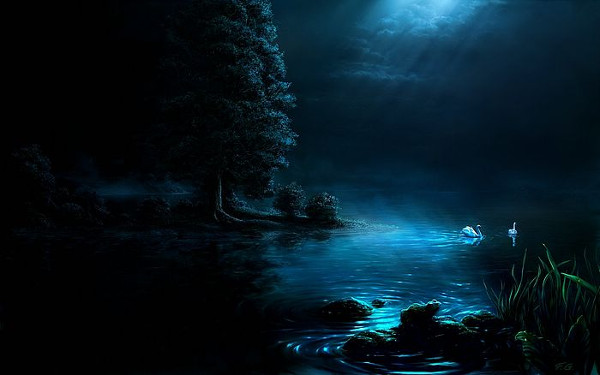

|
San tsean-aimsir mhaith, i bhfad ó shin, bhí fear dar ab ainm Domhnall Dubh ina chónaí i ngar do Loch rí. Bhí sé fiche bliain pósta gan chlainn, acht aon iníon amháin, agus bhí sise dall ó rugadh í, agus 'sé an t-ainm a bhí ag na daoine uirthi, Nóirín dall, dubh. Bhí guth breá ceolmhar aici, agus ní raibh sean-amhrán sa tír nach raibh le croí aici. |
 |
Aon tráthnóna amháin d'iarr Nóirín ar a hathair í a thabhairt síos go bruach an locha, mar bhí an tráthnóna an- bhreá. Thug an t-athair síos í, agus dúirt sé léi: “fan ansin, nó faigh do bhealach a bhaile.” Nuair d'imigh a hathair shuigh sí síos ar thurtóig thirim, agus thoisigh sí ag gabhail amhráin, mar so:-
A Bhealtaine bhuí, is tusa an mhí
A mbíonn dath deas ar na féileacáin;
Bíonn leanbh ag an mnaoi, ag an bhó bíonn lao,
'Gus ag an láir bíonn searrachán.
Ní raibh sí i bhfad ag gabhail an amhráin go dtáinig bradán mór go barr an uisce, agus chuir sé cluas air féin ag éisteacht léi. Nuair chuir sí deireadh ar an rann, chuala sí an guth 'ghá rá: “is mór an trua go bhfuil tú dall. Dá mbeadh domblas bradáin agat le cuimilt ar do shúilibh, bheadh do radharc agat.”
Nuair a bhí an ghrian ag dul faoi, tháinig Domhnall, agus thug sé a bhaile í.
D'inis sí dhó na focla a chuala sí. “Maith go leor, rachaidh mise ag iascaireacht ar maidin amárach,” arsa Domhall , “agus má tá bradán san loch gabhfaidh mé é.”
Ar maidin, lá arna mhárach, roimh grian go moch, d'éirigh Domhnall agus chuaigh sé síos go dtí an loch. Fuair sé bád, agus amach leis ag iascaireacht. Nuair tháinig sé go lár an locha, chuala sé cruiteach ag sgreich; san am céanna fuair sé an líne ag tarraingt, agus thoisigh an tslat iascaireachta ag lúbadh. “Dar m'fhocal,” ar Domhnall, “tá bradán mór ar mo dhúbhán.” Leis sin, thoisigh sé ag tarraingt chomh maith agus d'fhéad sé, acht, mo bhrón! sciorr a chosa, agus thit sé amach ar mhullach a chinn san loch, agus síos, síos faoi uisce gur shaoil sé go raibh sé ag deireadh an domhain.
Nuair a d'oscail sé a shúile, fuair sé é féin i seomra bhreá, i láthair fir mhóir. Bhí a chraiceann mar craiceann éisc. Labhair an fear leis: “A Dhomhnaill dhuibh, ar sé, “cad a thug anso thú?”
“Níl fhios agam,” arsa Domhnall, “bhíos ag iascaireacht ar Loch rí, agus shaoil mé go raibh bradán mór gafa agam, agus bhíos 'gha tharraingt isteach nuair sciorr mo chosa, agus thit mé ar mhullach mo chinn isteach san loch. Ní bheinn ag iascaireacht acht tá iníon dall agam, agus chuala sí dá mbeadh domblas bradáin aici le cuimilt ar a súilibh go mbeadh a radharc aici. Sin agat an fáth a bhfuilim anso.”
“Tá tú i láthair righ an locha anois,” arsa an fear, “agus is fada atá mé ag fanacht leat. Éist liom anois. Ar chuala tú riamh an chaoi ar tharla don loch a bheith anso san áit a bhfuil sé?” “Níor chuala mé, go deimhin,” arsa Domhnall, “gídh go bhfuilim 'mo chónaí i ngar don loch ó rugadh mé, agus mo sheacht sinsir romham.” “Ní bheidh tú i bhfad mar sin,” arsa an fear mór.
“Ba rí m'athairse, agus fuair mo mháthair bás an oíche a rugadh mé, acht níorbh fhada gur phós m'athair bean eile, agus bhí cumhachta mhór draíochta ag mo leasmháthair. Nuair bhí mé seacht mbliana d'aois chuir mé fearg uirthi; tharraing sí amach slaitín draíochta, chuir sí crith talún ar dhúiche m'athar, agus rinne sí loch de. Báitheadh m'athair, agus rinneadh bradán díomsa, mar fheiceas tú. Tagann mo leas mháthair gach uile oíche le mo ghéar- chrádh, acht ó tharla go bhfuil tusa liom, is dóigh go bhfaighidh mé bua uirthi anois. Anois tar liom, agus fágfaidh mé ar bhruach an locha thú; ansin teírigh go bun an chrainn mhóir mhaol dearg atá ag fás ar chúl do thí, agus romhair síos go dtaga tú ar leac mhóir. Tóg an leac, agus gheobhaidh tú cat dubh fireann ina chodladh fúithi; tabhair leat an cat go bruach an locha, agus beidh mise ansin romhat. Má ghní tú mar adeir mise leat, beidh tú sona, saibhir, buansaolach, acht mura ndéana tú mar adeirim, beidh tú 'do dheoraí bocht cráite, chomhfhad agus tá uisce ag rith nó féar ag fás.”
“Dar m'fhocal, déanfaidh mé mar adeir tú,” arsa Domhnall, “agus tá mé réidh lé dhul leat.”
Ansin, bhuail sé buille de shlaitín draíochta ar Dhomhnall, agus rinne sé cruiteach de, agus níorbh fhada go bhfuair sé é féin ag snámh ar an loch. Nuair a tháinig sé go bruach, bhuail an bradán mór buille den tslaitín draíochta air, agus lé casadh do láimhe, bhí sé ar talamh, agus rinne sé a bhealach a bhaile. Nuair a tháinig sé chomh fada leis an gcrann mór maol dearg, thoisigh sé ag rómhar; níorbh fhada go dtáinig sé ar an leac mhóir, agus nuair thóg sé an leac, chonaic sé an cat dubh 'na chodladh. Chuir sé an cat in a bhrollach, agus as go bráth leis go bruach an locha. Bhí an bradán mór ansin roimhe, agus thug sé é féin agus an cat dubh go dtí a sheomra faon loch. Ansin dúirt sé lé Domhnall:— “is maith an laoch thú; anois faigh scian, agus bain croí an chait amach, agus tabhair domhsa é.”
Fuair Domhnall an scian, bhain sé amach croí an chait, agus bhí sé 'gha thabhairt don bhradán, acht chuala sé torann mór. “Deifir, deifir,” arsa an bradán, “tá an chailleach ag teacht. Faigh mo chlaidheamh géar atá thall ar an mballa, agus cruthaigh gur gaiscíoch thú, nuair thiocfas an chailleach agus a cuid cat isteach.” (Tuilleadh)
Domhnall Dubh agus Bradán Loch Rí
II
Ar lean.
“Ní thig liom scaradh leat mar sin,” ar an bradán mór, “agus sílim gur díchéilleach an fear thú, acht mar tá dúil agat fan acht in Éirinn bíodh sé mar sin. Tá fhios agat cé bhfuil Dún na righ i ngar don loch?” “Tá eolas agam air, go deimhin,” ar Domhnall, “is iomaí maide a ghearr mé ann.” “Má bíonn tú san dún anocht ar uair an mheáin oíche, beidh mise romhat, agus cuirfidh mé i mbealach saibhris fháil thú; agus so duit domblas le cuimilt ar shúilibh d'iníne, agus beidh a hamharc aici, agus duine ar bith eile atá dall in do chomharsanacht, déan mar an gcéanna leis. Acht ná glac ór ná airgead ó dhuine bhocht, agus nuair a rachas tú a bhaile, ar do bheatha, ná hinis d'aon neach beo cé an áit a raibh tú, ná aon ní d'éirigh dhuit ó d'fhág tú baile.” Glacfad do chomhairle, agus déanfad mar adeir tú,” ar Domhnall.”
Ansin, bhuail sé buille air, agus rinne sé cruiteach (crotach) dhe, agus dúirt sé “lean mise.” Lean Domhnall é, agus níorbh fhada go bhfuair sé é féin ag snámh ar an loch, agus an bradán mór lena thaoibh. Nuair tháinig siad go bruach, chaith sé Domhnall suas ar talamh mar bhí sé, seal má ndeachaigh sé ag iascaireacht.
Nuair chuaigh sé a bhaile, bhí an teach líonta roimhe lé daoinibh muinteartha agus lé comhar- sanaibh; agus bhí a bhean agus a iníon ag gol is ag caoineadh mar shaoil siad go raibh sé báite. Shiúil sé isteach, agus d'iompaigh siad air le hiontas, agus thoisigh siad ag croitheadh lámh leis. “Fág mo bhealach,” ar Domhnall, “go dtuga mé radharc dom' iníon.” Tharraing sé amach domblas an bhradáin, agus chuimil sé súile Nóirín, agus bhí radharc aici chomh maith agus bhí ag Domhnall féin. Scread sí agus bhuail sí a bosa lé lúcháir agus thug sí buíochas do Dhia.
Bhí go leor daoine dall san bpar- ráiste, agus chuir sé fios uirthi, agus thug sé a radharc dóibh. Níorbh fhada go ndeachaigh cáil Dhomhnaill thríd an tír, agus bhí daill ag teacht chuige gach uile lá.)
Nuair tháinig uair an mheáin oíche, nó seal gearr roimhe, chuaigh Domhnall go Dún na rí; agus is gearr gur chuala sé rúille búille, agus torann cosa capall, agus isteach leis an Slua Sí, agus an bradán mór ós a gcionn. Nuair bhí an t-iomlán acu istigh san Dún, labhair an bradán mór “Tá báire liathróide coise le bualadh againn anocht in aghaidh Sí Laighean, tá gaiscíoch agam le bheith i láthair chomh tréan agus atá 'san domhan. Tar i láthair, a Dhomhnaill dhuibh, go bhfeice na daoine uaisle thú. Tháinig Domhnall, i láthair, agus chroith na fir sí lámh leis, agus i láimh gach aoin bhí sparán óir. Tháinig an bradán chuige ar deireadh, agus thug sé dhó mála mór leis an ór a chur ann, agus dúirt sé leis é chur faoi chrann go dtagadh sé ar ais, agus gan aithris do neach a rúin. Ansin tháinig síon mhór ghaoithe, agus d'fhuadaigh sí an t-iomlán acu suas san aer, agus ligeadh síos ar mhachaire mhór iad. Bhí Slua Sí Laighean ar an machaire agus níorbh fhada gur thoisigh an báire ghá bhualadh.
Bhí an ghealach thuas, agus bhí an oíche bunáit chomh geal leis an lá: bhí siad ag rith anonn is anall; tromach, tramach; agus is iomaí fear a thit le cor coise. Fá dheireadh, fuair Sí Chonnacht bua, agus gnóthaigh siad an báire.
Tháinig an tsíon ghaoithe arís, agus tugadh ar ais iad go Dún na righ, i ngar do Loch- Rí. Ansin dúirt an bradán mór lé Domhnall. “Faigh do mhála, agus imigh a bhaile - tá an oiread agat anois agus chaithfeas tú féin, do bhean, agus t'iníon, acht ná lig an rún amach nó caillfidh tú an t-iomlán. Slán leat!!”
Chuaigh Domhnall a bhaile, agus chuir sé an mála óir i bhfolach faoi leac mhóir in urlár an tí seal má'r éirigh Noírín nó an bhean; agus ní raibh fhios acu go raibh sé amuigh ar chor ar bith. Nuair d'éirigh siad, thais- beán sé lán a ghlaice d'ór dóibh, agus chuir sin lúcháir mhór uirthi, rith siad chuige, agus shaoil sé go múchfadh siad le pógaibh é. Chean- naigh sé gabhaltas mór talaimh, agus chuir sé teach breá ar bun. Seal gearr 'na dhiaidh so phós Nóirín scológ saibhir.
Tá an bradán mór san gcaisleán faoin loch, agus thig le duine ar bith é fheiceáil gach uile lá Bealtaine, ag snámh ar bharr uisce an locha. Mhair Domhnall, a bhean 's a iníon go sona, séanmhar, buansaolach; agus gur ab é ar ndála go léir é.
“Páidín Ruadh Ó Ceallaigh.”
| Baile |